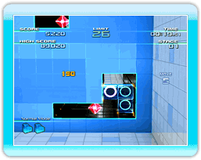

10 |
Seleccionar modo de juego |
 |
|
● Pantalla de modo de selección 
・Normal 
・Endless (infinito) 
・Trick Challenge (desafío de los trucos) 
・Keydron Tutorial (tutorial) Notas: Una lección podría no estar disponible hasta que se haya completado la lección que la antecede.
・Keydron Memories (memorias de Keydron) Nota: Ten cuidado, una vez que borres los datos no podrás recuperarlos.
● Ajustes de las reglas del modo
Nota: A medida que avances en el juego, se incrementará el número disponible de los keydron, de las fases, de niveles y del papel tapiz. |
 |
 |
 |